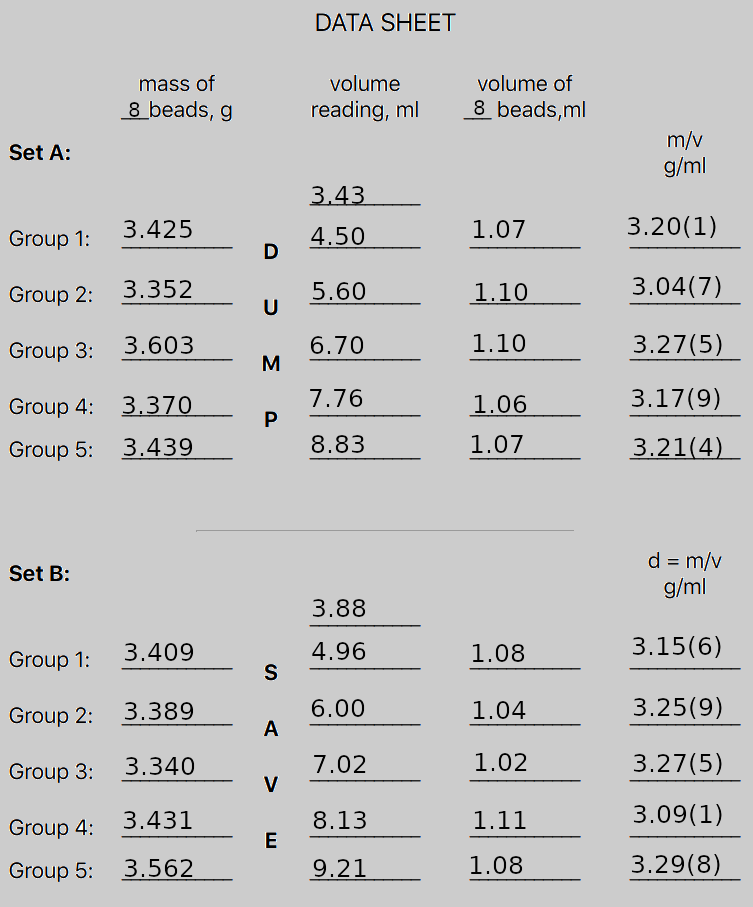

Jan MacGregor, 10/4/2020
The purpose of this lab was to demonstrate the difference (if any) had on standard deviations of the mass and volume of similar marbles, compared to the exact same marbles.
The following was the data gathered for both sets, indicating which group had the marbles "dumped" back into the group, and which were "saved" for the volume measurement. There were extra significant figures included in the parenthesis at the end of the measurement, in case it made a more distinct pattern between the standard deviations.

The average of the densities of Set A was found to be 3.18, and Set B's average density was found to be 3.30, which is a significant and unexpectedly large difference.
| Set A | Group 1 | Group 2 | Group 3 | Group 4 | Group 5 |
|---|---|---|---|---|---|
| Density or d (g/ml) | 3.20 | 3.05 | 3.28 | 3.18 | 3.21 |
| Deviation (d-davg) | 0.02 | -0.13 | 0.10 | 0.00 | 0.03 |
| Dev2 | 0.0004 | 0.0169 | 0.0010 | 0.0000 | 0.0009 |
| Sum of dev2 | 0.0282 | ||||
| 0.0282 ÷ (n-1) | 0.00705 | ||||
| √0.00705 | Standard Deviation = 0.084 | ||||
| Set B | Group 1 | Group 2 | Group 3 | Group 4 | Group 5 |
|---|---|---|---|---|---|
| Density or d (g/ml) | 3.16 | 3.26 | 3.28 | 3.09 | 3.30 |
| Deviation (d-davg) | -0.06 | 0.04 | 0.06 | -0.13 | 0.08 |
| Deviation2 | 0.0036 | 0.0016 | 0.0036 | 0.0169 | 0.0064 |
| Sum of dev2 | 0.032 | ||||
| 0.032 ÷ (n-1) | 0.008025 | ||||
| √0.008025 | Standard Deviation = 0.090 | ||||
As shown by the tables above, the standard deviation was higher in set B, or in other words was higher when the same marbles were used. From this project, I've learned that with random chance being involved in the analysis of standard deviations, unexpected outcomes can occur, even if unlikely. Due to the relatively low number of significant figures measured, low amount of standard deviation in both cases, and most of all inherently random nature of this analysis, it's entirely possible that the results of this quantitative analysis were erroneous.